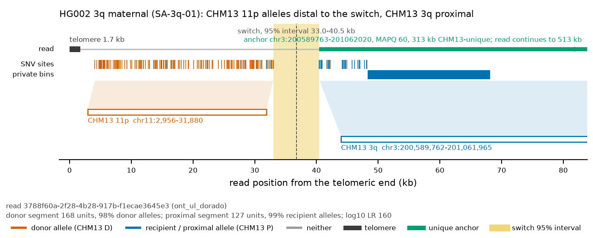
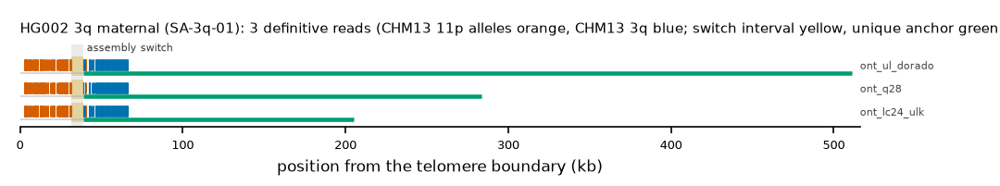

HG002 3q maternal: SA-3q-01
Claim HG002#2#chr3_MATERNAL#R. All claims
- cohort
- HG002 Q100
- individual
- HG002
- haplotype
- maternal
- arm
- 3q
- allele
- SA-3q-01 (foreign)
- model
- donor CHM13 11p, proximal CHM13 3q, recipient CHM13 3q, pattern DP
- claimed end(s)
HG002#2#chr3_MATERNAL#R- assembly switch
- 36,576 bp from the telomere boundary; on CHM13 chr3:201064202; own-window projection 31339-38758 bp
- v1 verdict
- confirmed (confirmed)
- definitive tier
- definitive (>= 2 datasets)
- reads
- 7 conclusive switch-concordant, 0 discordant, 0 contradicting, 94 consistent; 3 definitive (ont_lc24_ulk,ont_q28,ont_ul_dorado)
- by tier
- definitive:3;conclusive_unique_anchor_off_end:4;consistent:94
- source
- HG002 Q100 v1.1 public read alignments (16 files; 12 independent datasets after molecule de-duplication)


Conclusive and contradicting reads (12)
124 further reads are consistent (switch test passed, but no terminal telomere, anchor or integrity); they are
listed in reads.tsv.gz. Switch: 95% interval in subtelomere coordinates (kb from the
telomere boundary) and projected on CHM13 3q. Each samtools command prints the read's record
from its public file (CRAM: add the CHM13 v2.0 FASTA as -T).
| read | dataset | tier | length | switch (subtelomere, kb) | switch on CHM13 | donor units / purity | proximal units / purity | anchor (CHM13, MAPQ, unique) | own-assembly best end | fetch |
|---|---|---|---|---|---|---|---|---|---|---|
f07a24e0-5080-48f9-b975-8c733c6086a5 | ont_lc24_ulk | definitive | 209,033 | 31.3-38.7 | chr3:201062020-201069446 | 168 / 0.98 | 127 / 0.99 | chr3:200895887-201062020, 60, 9.7 kb | HG002#2#chr3_MATERNAL#R (99.8%) ✓ | samtoolssamtools view -F 0x900 -X 'https://human-pangenomics.s3.amazonaws.com/T2T/HG002/assemblies/polishing/HG002/v1.1/mapping/ont_lc24_ulk/hg002v1.1_ont_lc24_ulk.pri.bam' 'https://human-pangenomics.s3.amazonaws.com/T2T/HG002/assemblies/polishing/HG002/v1.1/mapping/ont_lc24_ulk/hg002v1.1_ont_lc24_ulk.pri.bam.bai' 'chr3_MATERNAL:201029869-201097962' | awk -v r='f07a24e0-5080-48f9-b975-8c733c6086a5' '$1==r' |
cb301498-6330-44c0-a51f-2add6b72a7cb | ont_q28 | definitive | 285,544 | 31.3-38.7 | chr3:201062020-201069430 | 168 / 0.98 | 127 / 0.99 | chr3:200816960-201062020, 60, 86.7 kb | HG002#2#chr3_MATERNAL#R (99.7%) ✓ | samtoolssamtools view -F 0x900 -X 'https://human-pangenomics.s3.amazonaws.com/T2T/HG002/assemblies/polishing/HG002/v1.1/mapping/ont_epi2me_q28/hg002v1.1_ont_epi2me_q28.pri.bam' 'https://human-pangenomics.s3.amazonaws.com/T2T/HG002/assemblies/polishing/HG002/v1.1/mapping/ont_epi2me_q28/hg002v1.1_ont_epi2me_q28.pri.bam.bai' 'chr3_MATERNAL:201029869-201097962' | awk -v r='cb301498-6330-44c0-a51f-2add6b72a7cb' '$1==r' |
3788f60a-2f28-4b28-917b-f1ecae3645e3 | ont_ul_dorado | definitive | 512,812 | 31.3-38.7 | chr3:201062020-201069434 | 168 / 0.98 | 127 / 0.99 | chr3:200589763-201062020, 60, 312.8 kb | HG002#2#chr3_MATERNAL#R (99.4%) ✓ | samtoolssamtools view -F 0x900 -X 'https://human-pangenomics.s3.amazonaws.com/T2T/HG002/assemblies/polishing/HG002/v1.1/mapping/ont_r10_ul_dorado/hg002v1.1_ont_r10_ul_dorado.pri.bam' 'https://human-pangenomics.s3.amazonaws.com/T2T/HG002/assemblies/polishing/HG002/v1.1/mapping/ont_r10_ul_dorado/hg002v1.1_ont_r10_ul_dorado.pri.bam.bai' 'chr3_MATERNAL:201029869-201097962' | awk -v r='3788f60a-2f28-4b28-917b-f1ecae3645e3' '$1==r' |
cb301498-6330-44c0-a51f-2add6b72a7cb_1 | ont_herro | definitive (not counted: derived) | 273,311 | 31.3-38.7 | chr3:201062020-201069439 | 169 / 0.98 | 127 / 0.99 | chr3:200829321-201062020, 60, 74.3 kb | HG002#2#chr3_MATERNAL#R (100.0%) ✓ | samtoolssamtools view -F 0x900 -X 'https://human-pangenomics.s3.amazonaws.com/T2T/HG002/assemblies/polishing/HG002/v1.1/mapping/ont_HERRO_corrected/hg002v1.1_ont_herro_corrected.pri.bam' 'https://human-pangenomics.s3.amazonaws.com/T2T/HG002/assemblies/polishing/HG002/v1.1/mapping/ont_HERRO_corrected/hg002v1.1_ont_herro_corrected.pri.bam.bai' 'chr3_MATERNAL:201029869-201097962' | awk -v r='cb301498-6330-44c0-a51f-2add6b72a7cb_1' '$1==r' |
cb301498-6330-44c0-a51f-2add6b72a7cb | ont_q28_lc24 | definitive (not counted: duplicate molecule) | 285,544 | 31.3-38.7 | chr3:201062020-201069430 | 168 / 0.98 | 127 / 0.99 | chr3:200816960-201062020, 60, 86.7 kb | HG002#2#chr3_MATERNAL#R (99.7%) ✓ | samtoolssamtools view -F 0x900 -X 'https://human-pangenomics.s3.amazonaws.com/T2T/HG002/assemblies/polishing/HG002/v1.1/mapping/ont_q28_lc24/hg002v1.1_ont_q28_lc24.bam' 'https://human-pangenomics.s3.amazonaws.com/T2T/HG002/assemblies/polishing/HG002/v1.1/mapping/ont_q28_lc24/hg002v1.1_ont_q28_lc24.bam.bai' 'chr3_MATERNAL:201029869-201097962' | awk -v r='cb301498-6330-44c0-a51f-2add6b72a7cb' '$1==r' |
f07a24e0-5080-48f9-b975-8c733c6086a5 | ont_q28_lc24 | definitive (not counted: duplicate molecule) | 209,033 | 31.3-38.7 | chr3:201062020-201069446 | 168 / 0.98 | 127 / 0.99 | chr3:200895887-201062020, 60, 9.7 kb | HG002#2#chr3_MATERNAL#R (99.8%) ✓ | samtoolssamtools view -F 0x900 -X 'https://human-pangenomics.s3.amazonaws.com/T2T/HG002/assemblies/polishing/HG002/v1.1/mapping/ont_q28_lc24/hg002v1.1_ont_q28_lc24.bam' 'https://human-pangenomics.s3.amazonaws.com/T2T/HG002/assemblies/polishing/HG002/v1.1/mapping/ont_q28_lc24/hg002v1.1_ont_q28_lc24.bam.bai' 'chr3_MATERNAL:201029869-201097962' | awk -v r='f07a24e0-5080-48f9-b975-8c733c6086a5' '$1==r' |
19d5789c-ef2e-46e9-95e9-5bfb54e469c6 | ont_q28 | conclusive, places on another end | 241,349 | 31.3-38.8 | chr3:201062020-201069439 | 169 / 0.98 | 127 / 0.99 | chr3:200860403-201062020, 60, 45.2 kb | HG002#1#chr19_PATERNAL#L (99.3%) (not claimed end) | samtoolssamtools view -F 0x900 -X 'https://human-pangenomics.s3.amazonaws.com/T2T/HG002/assemblies/polishing/HG002/v1.1/mapping/ont_epi2me_q28/hg002v1.1_ont_epi2me_q28.pri.bam' 'https://human-pangenomics.s3.amazonaws.com/T2T/HG002/assemblies/polishing/HG002/v1.1/mapping/ont_epi2me_q28/hg002v1.1_ont_epi2me_q28.pri.bam.bai' 'chr3_MATERNAL:201029869-201097962' | awk -v r='19d5789c-ef2e-46e9-95e9-5bfb54e469c6' '$1==r' |
c8f49cbe-d614-4326-aa0e-550839f0a27c | ont_ul_dorado | conclusive, places on another end | 285,411 | 31.2-38.6 | chr3:201062020-201069424 | 167 / 0.98 | 126 / 0.99 | chr3:200816284-201062020, 60, 87.4 kb | HG002#1#chr19_PATERNAL#L (98.5%) (not claimed end) | samtoolssamtools view -F 0x900 -X 'https://human-pangenomics.s3.amazonaws.com/T2T/HG002/assemblies/polishing/HG002/v1.1/mapping/ont_r10_ul_dorado/hg002v1.1_ont_r10_ul_dorado.pri.bam' 'https://human-pangenomics.s3.amazonaws.com/T2T/HG002/assemblies/polishing/HG002/v1.1/mapping/ont_r10_ul_dorado/hg002v1.1_ont_r10_ul_dorado.pri.bam.bai' 'chr3_MATERNAL:201029869-201097962' | awk -v r='c8f49cbe-d614-4326-aa0e-550839f0a27c' '$1==r' |
4f659038-2807-4115-8a5f-94124b195a9b | ont_ul_dorado | conclusive, places on another end | 246,072 | 31.2-38.7 | chr3:201062020-201069433 | 167 / 0.98 | 125 / 0.99 | chr3:200855217-201062020, 60, 50.3 kb | HG002#1#chr19_PATERNAL#L (98.7%) (not claimed end) | samtoolssamtools view -F 0x900 -X 'https://human-pangenomics.s3.amazonaws.com/T2T/HG002/assemblies/polishing/HG002/v1.1/mapping/ont_r10_ul_dorado/hg002v1.1_ont_r10_ul_dorado.pri.bam' 'https://human-pangenomics.s3.amazonaws.com/T2T/HG002/assemblies/polishing/HG002/v1.1/mapping/ont_r10_ul_dorado/hg002v1.1_ont_r10_ul_dorado.pri.bam.bai' 'chr3_MATERNAL:201029869-201097962' | awk -v r='4f659038-2807-4115-8a5f-94124b195a9b' '$1==r' |
e84f4b15-d35c-4f50-a668-d66e4e72fa07 | ont_ul_dorado | conclusive, places on another end | 205,312 | 31.3-38.7 | chr3:201062020-201069421 | 166 / 0.96 | 126 / 0.99 | chr3:200895974-201062020, 60, 9.6 kb | HG002#1#chr9_PATERNAL#R (98.4%) (not claimed end) | samtoolssamtools view -F 0x900 -X 'https://human-pangenomics.s3.amazonaws.com/T2T/HG002/assemblies/polishing/HG002/v1.1/mapping/ont_r10_ul_dorado/hg002v1.1_ont_r10_ul_dorado.pri.bam' 'https://human-pangenomics.s3.amazonaws.com/T2T/HG002/assemblies/polishing/HG002/v1.1/mapping/ont_r10_ul_dorado/hg002v1.1_ont_r10_ul_dorado.pri.bam.bai' 'chr3_MATERNAL:201029869-201097962' | awk -v r='e84f4b15-d35c-4f50-a668-d66e4e72fa07' '$1==r' |
19d5789c-ef2e-46e9-95e9-5bfb54e469c6 | ont_herro | conclusive, places on another end (not counted: derived) | 241,291 | 31.3-38.8 | chr3:201062020-201069438 | 169 / 0.98 | 127 / 0.99 | chr3:200860405-201062020, 60, 45.2 kb | HG002#1#chr19_PATERNAL#L (99.3%) (not claimed end) | samtoolssamtools view -F 0x900 -X 'https://human-pangenomics.s3.amazonaws.com/T2T/HG002/assemblies/polishing/HG002/v1.1/mapping/ont_HERRO_corrected/hg002v1.1_ont_herro_corrected.pri.bam' 'https://human-pangenomics.s3.amazonaws.com/T2T/HG002/assemblies/polishing/HG002/v1.1/mapping/ont_HERRO_corrected/hg002v1.1_ont_herro_corrected.pri.bam.bai' 'chr3_MATERNAL:201029869-201097962' | awk -v r='19d5789c-ef2e-46e9-95e9-5bfb54e469c6' '$1==r' |
19d5789c-ef2e-46e9-95e9-5bfb54e469c6 | ont_q28_lc24 | conclusive, places on another end (not counted: duplicate molecule) | 241,349 | 31.3-38.8 | chr3:201062020-201069439 | 169 / 0.98 | 127 / 0.99 | chr3:200860403-201062020, 60, 45.2 kb | HG002#1#chr19_PATERNAL#L (99.3%) (not claimed end) | samtoolssamtools view -F 0x900 -X 'https://human-pangenomics.s3.amazonaws.com/T2T/HG002/assemblies/polishing/HG002/v1.1/mapping/ont_q28_lc24/hg002v1.1_ont_q28_lc24.bam' 'https://human-pangenomics.s3.amazonaws.com/T2T/HG002/assemblies/polishing/HG002/v1.1/mapping/ont_q28_lc24/hg002v1.1_ont_q28_lc24.bam.bai' 'chr3_MATERNAL:201029869-201097962' | awk -v r='19d5789c-ef2e-46e9-95e9-5bfb54e469c6' '$1==r' |
Files and IGV
This is a showcase claim: its reads are in the repository under evidence/showcase/HG002_2_chr3_MATERNAL_R/ with IGV sessions CHM13 v2.0 (loci chr11:1-47170 and chr3:200589768-201105948) and own assembly, and a what-you-should-see note. Split at the switch, the distal segments of 3 of 3 showcase reads align to CHM13 11p and the proximal segments of 3 to CHM13 3q at MAPQ 60.
Re-derive this verdict
git clone https://github.com/jlanej/human-subtelomere-atlas && cd human-subtelomere-atlas
evidence/replicate_claim.sh 'HG002#2#chr3_MATERNAL#R'The script fetches the cited reads from the public source by region and read ID, re-runs the frozen criteria and compares every per-read and claim verdict with this page (details).